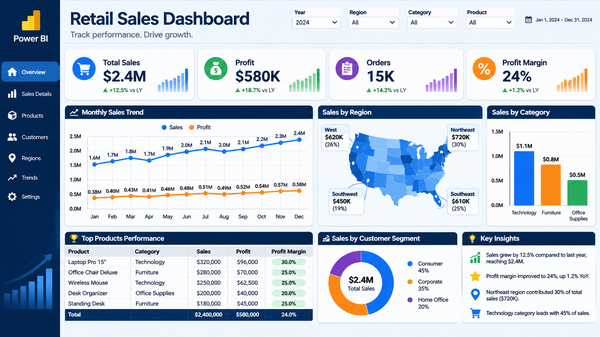
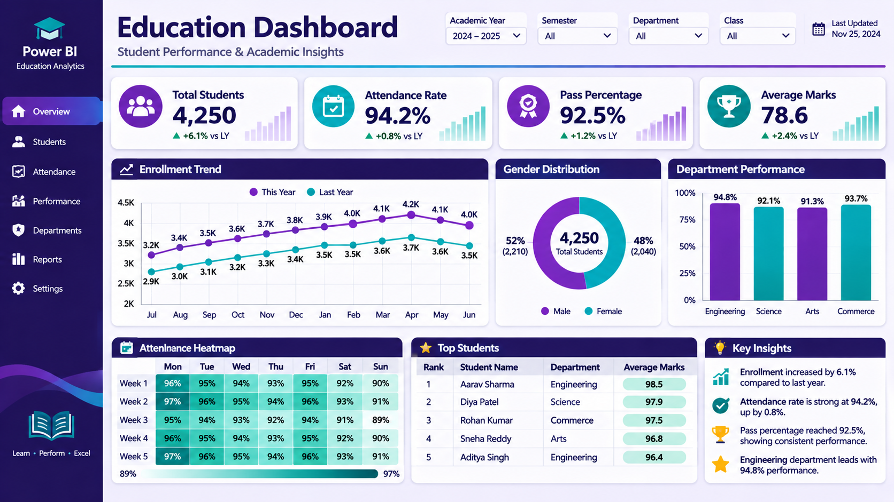
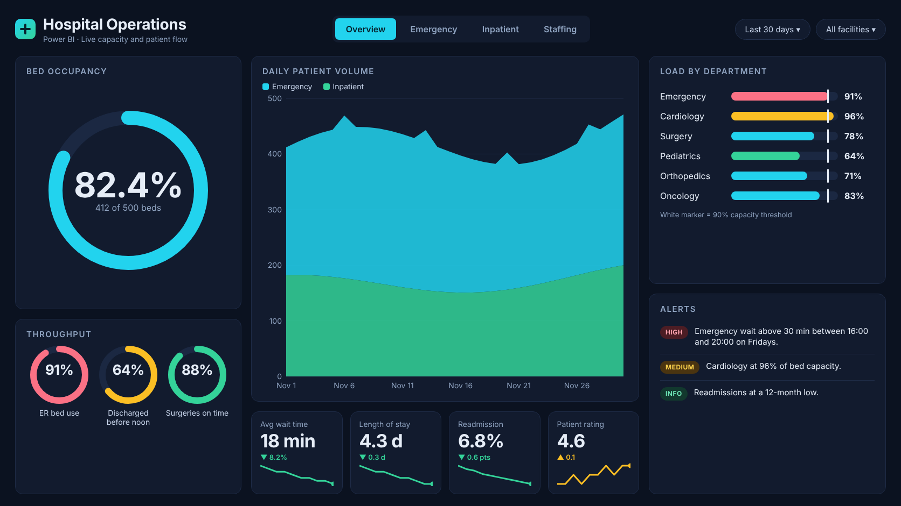
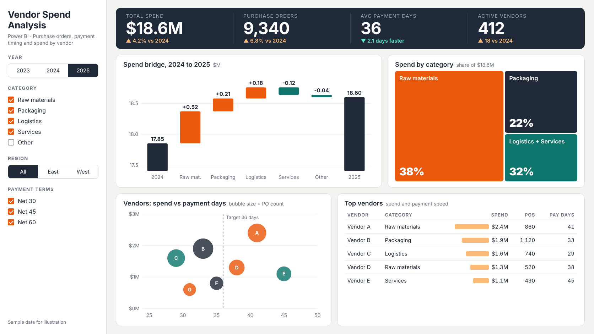

{{p.domain}}
{{p.title}}
{{p.summary}}
{{p.outcome}}
Stack: {{p.stack}}
I turn raw data from SQL, Azure and legacy reporting systems into dashboards that business teams can open, filter and trust without asking anyone else for numbers.
Turn your data into meaningful insights.
I am a Power BI professional with 7+ years in IT and more than 5 of them in Power BI, SQL and the Microsoft Power Platform. I work from the business question backward: gather the requirement, check the data, design the model, then build the report.
My day-to-day covers data modelling, DAX measures, Power Query transformations, row-level security, report publishing and SharePoint embedding. I also build internal tools with Power Apps and Power Automate, such as IT ticketing and invoice processing.
The goal on every project is the same: a data model solid enough that business users answer their own questions without depending on someone else in the organisation.
Four sample Power BI dashboards that show how I structure a report: headline KPIs first, then trend, breakdown and detail. Figures are illustrative.
Sales, profit, orders and margin against last year, with a monthly trend, regional map, category split, top products by margin and a customer segment breakdown. Filters for year, region, category and product.


Student performance and academic insights: enrollment against last year, attendance rate, pass percentage, department comparison, an attendance heatmap by weekday and a ranked list of top students.
A dark command-centre view of bed occupancy, throughput gauges, daily emergency and inpatient volume, wait time, length of stay and readmission trends, department load against a capacity threshold, and live alerts.


A slicer rail and KPI strip over a spend bridge from last year to this year, a category treemap, a bubble chart of vendor spend against payment days and a ranked vendor table with data bars.
Five client engagements across retail, distribution and manufacturing. Each started with requirements gathering and data validation, and ended with published reports, access set up for the right users and a handover to the business.
{{p.summary}}
{{p.outcome}}
From systems analysis to business data analysis to Power BI delivery, newest first.
I take on freelance Power BI and data analytics projects alongside my full-time role. Share your data, your questions and your deadline, and I will scope a clear deliverable.
{{f.text}}
I am open to Data Analyst and Power BI roles. Send a note with the problem you are trying to solve.